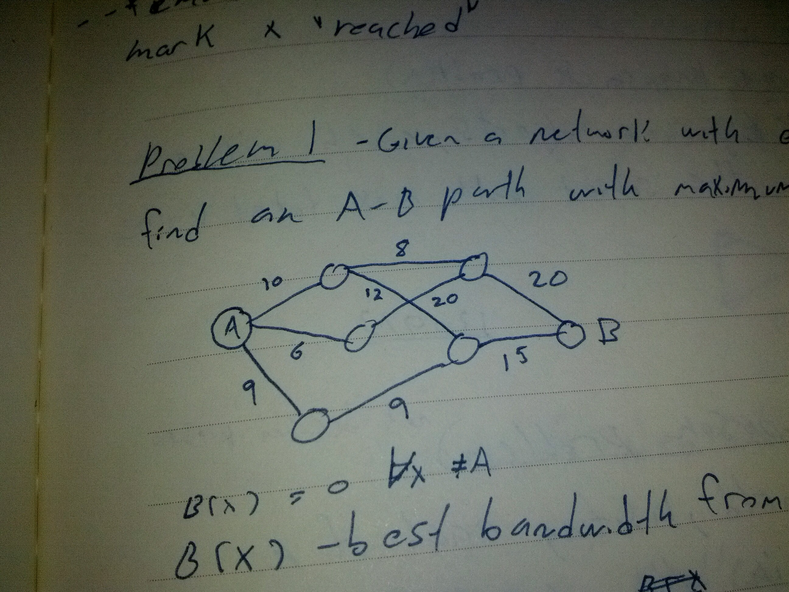

We can adapt Dijkstra’s Algorithm to solve similar problems to the “vanilla” shortest-length on weighted graph problem.
Example
Problem 1 - Given a network with edges weighted with bandwidths, find a path from node A to node B with maximum limiting bandwidth.
nodes = ["A", "B", "C", "D", "E", "F", "G"]
graph = {("A", "C"): 10, ("A", "D"): 6, ("A", "E"): 9, ("B", "F"): 20,
("B", "G"): 15, ("C", "F"): 8, ("C", "G"): 12, ("D", "F"): 20,
("E", "G"): 9,}
# limiting bandwidth from "A" to node
limiting_bw = {node: 0 for node in nodes}
not_done = ["A"]
reached = []
predecessors = {node: "" for node in nodes}
while not_done:
current_node = max(not_done, lambda x: limiting_bw[x])
unreached_neighbours = []
for tup in graph:
if current_node in tup:
# select neighbour
unreached_neighbours.append(
tup[(tup.index(current_node) + 1) % len(tup)])
for node in unreached_neighbours:
current_bandwidth = min(limiting_bw[current_node],
graph[(current_node, node)])
if current_bandwidth > limiting_bw[node]:
limiting_bw[node] = current_bandwidth
predessors[node] = current_node
if node not in not_done:
not_done.append(node)
not_done.remove(current_node)
reached.append(current_node)